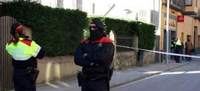

La Liga Árabe aprueba sanciones económicas contra el régimen de Al Asad en Siria
2011-11-27T18:40:59Z
EFE
- Es una manera de castigar al país sirio por no aplicar un plan para resolver la crisis.
- Desde el mes de marzo han muerto más de 3.500 personas por la represión del régimen de Bachar al Asad, según Naciones Unidas.
- Las sanciones buscan centrarse en las personas vinculadas al régimen de Al Asad y no afectar a las necesidades de la población.
- 28 personas han fallecido este domingo en otra jornada de represión.
La Liga Árabe aprobó este domingo un paquete de sanciones económicas contra Siria después de que Damasco haya rechazado aceptar a una misión de observadores árabes para verificar el cese de la violencia, dijo el primer ministro catarí, Hamad bin Yasim bin Yaber al Zani.
A las 13.00 hora local (12.00 hora peninsular española) comenzó la reunión de los titulares de Exteriores en la capital egipcia para aprobar el paquete de sanciones, al que este sábado dio su visto bueno el Consejo Económico y Social de la Liga Árabe, integrado por los ministros de Economía y Finanzas.
Las sanciones económicas
La resolución establece la prohibición de los viajes de altos responsables sirios y de los vuelos de las aerolíneas sirias al resto de países árabes, excepto en el caso de los aviones de mercancías.
También se impide cualquier transacción comercial y gubernamental a través de los bancos centrales árabes, que deberán vigilar los giros bancarios, salvo los que envíen los trabajadores sirios en el exterior a sus familiares.
El documento estipula, además, el bloqueo de los fondos financieros del Gobierno y los responsables sirios de acuerdo con una lista de nombres que deberá elaborar una comisión y la suspensión de la financiación de cualquier proyecto en territorio sirio por parte de los países árabes.
La decisión busca que las sanciones se centren en las personas vinculadas al régimen de Bachar al Asad y no perjudiquen al pueblo sirio. Por eso, se permitirá el intercambio de mercancías estratégicas que satisfagan las necesidades de la población.
Asimismo, estarán exentos aquellos productos que representen un alto porcentaje del Producto Interior Bruto (PIB) de algún país árabe para evitar dañar su economía.
Reacción de Siria
El ministro de Asuntos Exteriores sirio, Walid al Moalem, acusó este sábado a la Liga Árabe de infringir su estatuto y buscar la intervención extranjera en Siria, cuya participación en la organización panárabe fue suspendida hace más de diez días.
Las sanciones económicas se impondrán después de que Siria no firmara el protocolo de la misión de observadores internacionales que tenía como objetivo vigilar la aplicación de una iniciativa árabe para detener la violencia en el país.
Esta propuesta formaba parte de un plan más amplio con el que la Liga Árabe pretendía propiciar una solución a la crisis que atraviesa el país, donde han muerto más de 3.500 personas desde que el pasado marzo estallaran las protestas duramente reprimidas por el régimen de Al Asad, según cifras de Naciones Unidas.
Otro día de represión
Al menos 28 civiles han fallecido en acciones de represión perpetradas por las fuerzas de seguridad en Siria, la mayoría en el bastión opositor de Homs.
En un comunicado, el Observatorio Sirio de Derechos Humanos (OSDH), que anteriormente cifró en diez el número total de víctimas mortales, indicó que quince personas perecieron en la provincia central de Homs, que es escenario de redadas intensivas de las fuerzas policiales y militares.
La violencia de las fuerzas del orden sirias causó, además, la muerte de diez personas en la localidad de Rankus, situada en los alrededores de Damasco, entre ellos un menor de 14 años de edad.
En este del país, la ciudad de Deir al Zur fue escenario de un tiroteo y dos personas murieron cuando las fuerzas de seguridad dispararon contra un funeral por otro mártir que a su vez falleció durante un ataque de las tropas del régimen.
Además, el OSDH precisó que otra persona perdió la vida en la localidad de Kafernobl, en la provincia septentrional de Idleb, después de que fuera detenido por las fuerzas policiales sirias, pero sin precisar las circunstancias de su fallecimiento.

Un hombre de 29 años muere en una pelea en Barberà del Vallès
2011-11-27T17:45:24Z
EFE / VIDEO: ATLAS
- Los Mossos ya han identificado al presunto agresor.
- Esta reyerta ocurrió a las 02.00 horas por causas que se desconocen.
- Los servicios médicos no pudieron hacer nada por la vida del joven.

Un joven de 29 años ha muerto asesinado la madrugada de este domingo en Barberà del Vallès (Barcelona), aunque la policía ya ha identificado al presunto agresor e intenta localizarlo, informan los Mossos d'Esquadra.
La policía investiga el suceso ocurrido alrededor de las 02.00 horas, cuando, por causas que se desconocen, se ha producido una pelea en un bar de la calle Nemesi Valls de Barberà del Vallès.
Cuando la policía ha llegado al lugar del suceso ha encontrado al joven estirado en el suelo, rodeado de sangre, sin que los servicios médicos desplazados al lugar hayan podido hacer nada para estabilizarle y el joven ha fallecido.
La policía autonómica ha conseguido identificar al presunto agresor, por lo que ha desplegado un amplio dispositivo para intentar detenerle.
La investigación está en manos del Área Territorial de la Región Policial Metropolitana Norte.
Un policía, en estado crítico al dispararse en el Congreso de los Diputados
2011-11-27T17:39:08Z
EFE
- El hecho ha ocurrido a las 14.50 h por causas que aún se desconocen.
- Se encuentra ingresado en el hospital Gregorio Marañón de Madrid.
- La policía descarta "la implicación de otras personas".
Un policía destinado en la Comisaría Especial del Congreso de los Diputados ha resultado gravemente herido en la cabeza por disparo de su arma reglamentaria la tarde de este domingo, han informado fuentes del SAMUR a 20minutos.es. El agente se encuentra ingresado en estado crítico en el hospital Gregorio Marañón de Madrid.
Según fuentes del SAMUR y de la Jefatura Superior de Policía, el agente, del que no se ha facilitado su identidad, ha resultado herido en las instalaciones de la Cámara Baja.
Fuentes del Congreso han informado, en una nota, de que la policía está investigando las circunstancias en las que se han producido los hechos, "descartando la implicación de otras personas".
Tras el suceso, que ocurrió a las 14.50 h, miembros de Emergencias Madrid se personaron en el lugar donde atendieron al policía y lo trasladaron, en estado crítico, al Gregorio Marañón.
El Levante goleó a la contra a un Sporting que falló en defensa
2011-11-27T17:12:27Z
EFE
- Corta así la racha negativa de tres derrotas consecutivas (4-0).
- Barkero, Valdo y un doblete de Koné sentenciaron el choque.
El Levante, tras tres derrotas seguidas, volvió al camino de la victoria con una goleada al contragolpe ante el Sporting de Gijón, que mostró carencias en defensa y se vio desarbolado con dos goles al principio del segundo tiempo.
El Sporting sólo fue superior al Levante desde que recibió el 1-0 hasta el descanso, mientras su centro del campo se impuso al juego en largo del Levante. Sin embargo, sus errores en defensa le condenaron ante un rival que le cedió el terreno de juego para salir a la contra y disfrutó con más facilidad de la prevista de los espacios que esperaba encontrar para resolver el partido.
La primera parte tuvo dos fases muy diferenciadas. Hasta el gol, el Levante impuso su juego de balones largos y apenas dio opciones al Sporting para acercarse a su portería, mientras que tras el tanto de Barkero, el equipo asturiano dominó más la pelota, se adueñó del centro del campo y jugó mejor que el Levante.
Por lo que a ocasiones se refiere, el Levante aprovechó la suya en un balón robado por Koné a un defensor visitante, que le permitió avanzar y ceder a Barkero para que marcara con la derecha.
El Sporting, en cambio, y aunque en acciones aisladas dispuso de tres ocasiones en el primer periodo con una chilena de De las Cuevas, un cabezazo de Barral y, casi en el descanso, una nueva opción para De las Cuevas.
Cuando el partido llegó al descanso, el Levante necesitaba más que el Sporting pasar por el vestuario, ya que cada vez llegaba menos a la meta de Juan Pablo y la capacidad de maniobra de su rival en la zona ancha era cada vez mayor.
La segunda parte empezó de la mejor manera posible para el equipo local, con dos goles que hundieron definitivamente al Sporting en muy pocos minutos.
En el primer minuto de juego de la reanudación llegó el 2-0 en una buena recuperación de balón del equipo local conducida por Juanlu y que culminó Valdo. Casi de inmediato, Munúa evitó el gol del Sporting con una gran parada y en la acción posterior, Kone puso el 3-0 en una contra perfecta.
Faltaban casi cuarenta minutos para el final y todo parecía resuelto.
Pese a ello, poco después llegó el 4-0 en una falta que Del Horno envió al larguero y que Koné remachó ante la pasividad de la defensa del equipo asturiano, que no estuvo bien en ninguno de los cuatro tantos recibidos.
A partir de ese momento, el partido, aunque fue de ida y vuelta perdió intensidad y varios jugadores, en ambos equipos, empezaron a hacer la guerra por su cuenta con exceso de individualismo y aunque ambos equipos pudieron marcar, el 4-0 no varió.
Ficha técnica:
4 - Levante: Munúa, Javi Venta, Ballesteros, Nano (Pedro López, m.66), Del Horno, Farinós, Xavi Torres, Valdo, Barkero (Aranda, m.73), Juanlu y Koné (Rubén, m.71).
0 - Sporting de Gijón: Juan Pablo, Lora, Botía, Iván Hernández, Canella (Damián, m.46) Rivera (Nacho Novo, m.57), Nacho Cases, Trejo, De las Cuevas, André y Barral (Sangoy, m.57).
Goles: 1-0, m.20: Barkero. 2-0, m.46: Valdo. 3-0, m.52: Koné. 4-0, m.61: Koné.
Árbitro: Paradas Romero (colegio andaluz). Amonestó por el Levante a Juanlu, Barkero y Javi Venta y por el Sporting a Botía y Nacho Novo
Incidencias: partido disputado en el estadio Ciutat de Valencia ante 11.287 espectadores. Terreno de juego en buenas condiciones.
Saleh declara una amnistía general para los implicados en las revueltas de Yemen
2011-11-27T16:54:01Z
EFE
- El presidente yemení ha tomado esta decisión que beneficiará a los que cometieron "locuras durante la crisis", según él.
- Los implicados en crímenes y el atentado contra el Palacio presidencial están excluídos de esta medida.
- Saleh ya ha firmado la iniciativa para poner fin a la crisis del país y que incluye su renuncia al poder.
El presidente de Yemen, Alí Abdalá Saleh, decretó este domingo una amnistía general para aquellas personas que cometieron "locuras durante la crisis", en alusión a la revuelta contra su régimen que estalló a finales del pasado enero. Este indulto, publicado por la agencia oficial de noticias yemení Saba, excluye a los implicados en crímenes y en el atentado contra el Palacio Presidencial de Saná, en el que resultó herido de gravedad Saleh.
Esta decisión fue anunciada en una reunión del Comité Central del gobernante Partido del Congreso Popular General (PCPG), organizada poco después de la vuelta de Saleh de Riad, donde firmó el plan del Consejo de Cooperación del Golfo (CCG).
En la reunión se ha debatido las nuevas evoluciones de los acontecimientos en Yemen después de que Saleh, hasta la fecha presidente de Yemen, firmara la citada iniciativa para poner fin a la crisis que vive el país desde hace diez meses y que incluye su renuncia al poder.
Saleh pidió a sus seguidores y a los miembros del PCPG que respeten este "acuerdo histórico", en alusión al plan del CCG, porque "puede poner fin a la crisis y evitar sus consecuencias".
Además, el gobernante les solicitó "solidarizarse para enfrentar a los enemigos de la patria y de su unidad, seguridad y estabilidad".
El pasado miércoles, Saleh suscribió la iniciativa en Riad junto con líderes de la oposición en respuesta a las amplias protestas que estallaron el pasado 27 de enero y que exigían su dimisión después de 33 años en el poder.
Qué supone el plan del Consejo de Cooperación del Golfo
El plan fija que el vicepresidente Abdo Rabu Mansur Hadi dirigirá durante dos años el proceso transitorio a lo largo del cual se enmendará la Constitución, se prepararán elecciones generales y se elegirán tanto un nuevo Parlamento como un nuevo presidente.
El sábado, Mansur Hadi emitió un decreto por el que convoca elecciones presidenciales para el 21 de febrero de 2012, conforme a los estipulado en el plan.
La firma de la iniciativa no ha supuesto, sin embargo, el fin inmediato de la violencia y las protestas en el país, puesto que los manifestantes volvieron a salir a las calles en rechazo a las garantías de inmunidad que el plan del CCG concede a Saleh y a sus colaboradores.
Yemen, el país más pobre de la península Arábiga, vive una situación de crisis y de revuelta popular contra el régimen de Saleh, quien ha ejercido el poder desde la unificación entre el norte y el sur en 1990, aunque desde 1978 ya era el gobernante de Yemen del Norte.
Gobierno de reconciliación nacional
Por otro lado, el vicepresidente yemení, Abdo Rabu Mansur Hadi, encargó este domingo al jefe del Consejo Nacional Opositor, Mohamed Salem Basandawa, la formación de un gobierno de reconciliación nacional para salir de la crisis que arrastra el país desde hace diez meses.
La decisión adoptada por Mansur Hadi, difundida por la agencia oficial de noticias yemení Saba, se enmarca en lo estipulado por la iniciativa del Consejo de Cooperación del Golfo (CCG) para Yemen, que implica la salida del poder del todavía presidente Alí Abdalá Saleh.
El Barça Regal sufre en Galicia y el Fuenla tumba al Cajasol en Sevilla
2011-11-27T16:40:54Z
EP
- Victoria ante el Blusens Monbus por 83-89.
- Mantiene el pulso por el liderato de la ACB con el Real Madrid.
- Fuenlabrada, Gran Canaria y el Bilbao vencen.
El Barcelona Regal sumó una nueva victoria que le mantiene como líder ante un Blusens Monbus que a punto estuvo que dar la sorpresa en el Multiusos Fontes do Sar, mientras que en el partido entre el Cajasol y el Fuenlabrada se tuvo que llegar a la prórroga para conocer la victoria madrileña por la mínima en la novena jornada de la Liga ACB.
Lo que a priori se presentaba como un encuentro fácil para el Barcelona, se convirtió en una pesadilla para los hombres de Xavi Pascual. El Blusens Monbus, penúltimo clasificado de la liga, consiguió ir por delante durante la mayor parte del partido y obligó al Barça a jugársela en el último cuarto, cuando un triple de Wallace en un momento crucial encarriló la remontada de los catalanes, que acabaron imponiéndose por 83-89.
El partido comenzó con equilibrio en el marcador y un equipo local que saltó a la cancha dispuesto a dar la sorpresa. El Blusens necesitaba un triunfo para salir del descenso y, desde el principio, puso en apuros a la defensa culé, que no estuvo demasiado acertada en el partido. El primer cuarto concluyó con un marcador de 20-17 y un Barcelona al que le salvaban las canastas de Juan Carlos Navarro.
El segundo cuarto comenzó con la misma tónica. Los gallegos, con un Corbacho muy inspirado en los tiros de tres, continuaban dominando el juego y el marcador. El conjunto blaugrana salió algo más 'enchufado' en el segundo tiempo y Navarro, que acabó como máximo anotador de su equipo con 22 puntos, consiguió igualar el partido gracias a sus triples.
Sin embargo, los de Santiago reaccionaron y volvieron a concluir un cuarto con una ligera ventaja en el marcador gracias a una buena jugada de Palacio, muy acertado en el duelo. Así se llegó al último cuarto, en el que la suerte cayó de parte de los blaugranas, que estuvieron acertados en varios momentos clave gracias a los lanzamientos exteriores de Wallace, Pete Mickeal y Huertas, que finalmente decantaron el partido a favor de los catalanes.
Mucha emoción la que se vivió en el Palacio de Deportes San Pablo, donde el Fuenlabrada, que se mantuvo en el marcador por delante del Cajasol durante todo el encuentro, tuvo que esperar a la prórroga para sacar una importante victoria, la tercera consecutiva, que acerca al conjunto madrileño a los puestos que dan acceso a la Copa.
Los madrileños, con un Ayón sobresaliente, que con sus 34 puntos consigue batir el récord de la liga, consiguieron amargarle el día a la defensa del Cajasol, una de las mejores de la liga. Los andaluces, que llegaron a estar 14 puntos por debajo en el partido, creyeron en la remontada a partir del último cuarto y consiguieron adelantarse en el marcador en los últimos instantes del encuentro.
Cuando quedaban seis centésimas para la conclusión, parecía que los locales obrarían el milagro al ponerse con una ventaja de dos puntos, pero el 'Fuenla' consiguió forzar una prórroga, donde un fallón Cajasol le puso la victoria en bandeja a los madrileños, que se aprovecharon de los puntos del escolta neozelandés Kirk Penney para imponerse por 97-99.
El Gescrap Bizkaia puede con el Estu
Menos emoción pero no menos espectáculo se pudo ver en el Bilbao Arena, donde los locales, el Gescrap Bizkaia, ganaron con comodidad al Asefa Estudiantes por 72-66, lo que supone la cuarta victoria de los bilbaínos frente a un 'Estu' que asistió a una notable vuelta de De la Fuente, quien anotó 13 puntos en su regreso.
Los vascos comenzaron dominando con solvencia gracias a un espectacular arranque de Aaron Jackson. La victoria local se intuía desde los primeros instantes de partido. Y no fallaron los bilbaínos, que estuvieron muy serios durante todo el encuentro y no dieron demasiadas concesiones a los madrileños, que intentaron engancharse sin éxito a un duelo desigual en el que los de Pepu Hernández no supieron encontrar la fórmula para frenar la embestida local.
La jornada matinal de este domingo se cerró con el duelo entre el Gran Canaria 2014 y el FIATC Joventut, donde también se tuvo que llegar a la prórroga para conocer al vencedor del encuentro. Finalmente fue el Gran Canaria el que celebró el triunfo ante su afición al imponerse por 77-71.
Los dos equipos ansiaban una victoria para escapar de la zona peligrosa de la tabla. Así se pudo ver un partido emocionante donde la igualdad se hizo patente tanto en el juego como en el marcador. Era de esperar que se tuviera que llegar a la prórroga, en la que el Gran Canaria, con un parcial de 15-9, se coronó como el vencedor del choque de la zona baja de la clasificación.
Dani Alves: "Ganar esta Liga es el reto más apasionante"
2011-11-27T16:06:31Z
EP
- El brasileño sigue creyendo en la remontada liguera esta temporada.
- El Barça se mantiene a seis puntos del Real Madrid, líder de Primera.
El lateral derecho del Barcelona Dani Alves afirmó que el pulso que mantiene con el Real Madrid en la Liga BBVA es "el reto más apasionante" desde que el brasileño viste la camiseta del Barcelona, ahora a seis puntos de los blancos en la clasificación.
"La mayoría si pudiera le regalaría ya el titulo al Real Madrid, pero esto se decide al final y si finalmente ganan, les felicitaremos. Si no, significará que lo lograremos nosotros", expresó Dani Alves en rueda de prensa.
El defensa culé habló sobre la diferencia de seis puntos que separan a los dos conjuntos en la Liga. "No me da miedo. Es real que llevan esa ventaja, pero lo único que tenemos que hacer es intentar reducirla, aunque es verdad que no tenemos tanto margen de errores ahora", lamentó.
"Hay que estar bastante concentrados para poder ir hasta el final sin más equivocaciones. El Madrid se va a dejar muy pocos puntos por el camino, pero tenemos por delante dos enfrentamientos directos. Recuperar esta ventaja es un reto apasionante", explicó Alves.
Sobre el partido en el Coliseum Alfonso Pérez, el lateral lamentó la falta de puntería de su equipo. "Tuvimos nuestras ocasiones, no las enchufamos y ellos, en la única que nos remataron a portería, la colaron. No hay otra explicación", dijo.
"A pesar de los malos resultados, no cambiamos nuestra forma de jugar. Tenemos una filosofía y si hay que morir lo haremos con ella", expresó Alves.
El Barcelona cosechó su primera derrota de la temporada ante el Getafe, aunque este año el equipo culé ya había encontrado dificultades en los desplazamientos en la Liga. "No es más difícil ahora que antes. Siempre ha sido muy complicado. Este año nos cuesta más fuera de casa, pero son fases. Por suerte nos pasa ahora y no al final. Hay margen para corregir", finalizo.
Centenares de personas marchan en Madrid para reclamar una huelga general
2011-11-27T15:16:14Z
EFE
- Los manifestantes, vinculados al movimiento 15-M, han marchado por Madrid.
- "Caminemos juntos contra la crisis y el capital a la huelga general" ha sido su lema.
- Piden al nuevo Gobierno que "dejen de hacer las mismas políticas y las reconviertan en favor de la clase trabajadora".
Cientos de personas vinculadas al movimiento 15-M han marchado este domingo por Madrid para reclamar una huelga general y que el nuevo gobierno despliegue una política en favor de los trabajadores y no en beneficio "de las empresas, de los mercados" y "de lo que diga" la canciller alemana, Angela Merkel.
"Caminemos juntos contra la crisis y el capital a la huelga general" ha sido el lema de las seis marchas que han partido desde diferentes puntos de la Comunidad de Madrid convocadas por las Asambleas de Trabajadores de Pueblos y Barrios de Madrid, que ya promovieron las que tuvieron lugar el pasado 19 de junio.
Como ocurriera entonces, aunque en esta ocasión de forma menos multitudinaria, los manifestantes han aplaudido cuando se han juntado en la plaza de Neptuno y han coreado consignas como "La crisis que la paguen los capitalistas", "Así, así, ni un paso atrás, contra los recortes huelga general".
Han portado pancartas en las que se podía leer: "No a los corruptos", "Los payasos cambian, el circo sigue" o "Que cada voto valga igual, sin leyes para timar".
En declaraciones a los medios, Rafael Flores, miembro de la asamblea de trabajadores de Vallecas, ha afirmado que la convocatoria se hizo antes de las elecciones generales con la intención de pedirle al nuevo gobierno, "fuera del color que fuera", que "dejen de hacer las mismas políticas y las reconviertan en favor de la clase trabajadora".
Flores ha señalado que se han manifestado para exigirle al partido que va a gobernar que "cambie de rumbo y que no haga políticas en favor de la empresa, de los mercados y, sobre todo de lo que dice 'la Merkel'".
Ha subrayado que no se han puesto en contacto ni con UGT, ni con CC OO para la convocatoria de la huelga general, pero sí con "sindicatos alternativos" para promoverla.
Flores no ha querido dar cifras de los asistentes a las marchas, si bien ha asegurado que en la suya, que partía del barrio de Puente de Vallecas, se han juntado entre 1.200 y 1.500 personas.
Ha reconocido que esperaban más implicación de "los trabajadores y vecinos de Madrid" en esta convocatoria, aunque ha manifestado que ha cubierto sus espectativas: "ha salido una cosa digna", ha apuntado.
Al final de la marcha, los organizadores han leído un comunicado en el que han reiterado su reivindicación al nuevo Ejecutivo de cambiar "este sistema capitalista" y que adopte medidas "que realmente defiendan a los trabajadores de las agresiones de los empresarios y de los banqueros".
Una mujer ha muerto en Terrassa a manos de su marido, que se ha entregado a los mossos
2011-11-27T14:51:16Z
AGENCIAS
- El hombre ha sido detenido como autor de un delito de homicidio, cometido con un arma blanca.
- Los mossos recibieron a las 9.00 horas una llamada del hombre, que explicó los hechos y manifestó su intención de entregarse a una patrulla.
- El presunto agresor no tenía denuncias por maltrato previas.
- Con este último caso, un total de 55 mujeres han fallecido víctimas de la violencia machista en lo que va de año.
- Una de cada tres mujeres de Barcelona afirma haber sufrido una agresión machista grave.
- Contra la violencia machista: ilusionadas y a la vez ignoradas.
- IV Congreso contra la violencia machista: "Los maltratadores están mejor asesorados que las víctimas".
- La campaña de las videoblogueras para denunciar el maltrato.
- Teléfono de ayuda contra los malos tratos: 016 (es gratuito y no aparece en la factura telefónica).
Un hombre se ha entregado este domingo a los Mossos d'Esquadra tras matar supuestamente a su mujer en su domicilio de Terrassa (Barcelona), ha informado la policía autonómica.
El propio homicida, que ha quedado detenido, ha llamado a los Mossos d'Esquadra hacia las 9.00 horas de este domingo para confesar que había matado a su mujer en el marco de una discusión en el domicilio familiar y entregarse a la policía.
Varias patrullas de los Mossos d'Esquadra se han desplazado al domicilio del matrimonio y han encontrado el cadáver sin vida de la mujer, que al parecer ha sido asesinada con una arma blanca.
Los agentes han detenido entonces al marido de la víctima, Francisco V.B., de 51 años y nacionalidad española, acusado de un delito de homicidio, y está previsto que en las próximas horas pase a disposición judicial, una vez los Mossos d'Esquadra le tomen declaración en comisaría. Además, no tenía denuncias previas por maltrato o violencia en el ámbito familiar, según ha informado la policía catalana.
En su llamada telefónica a la policía, el hombre ha explicado que acababa de tener una fuerte discusión con su mujer y que la había atacado con una arma blanca hasta acabar con su vida.
El Área Territorial de Investigación de la Región Metropolitana Norte de los Mossos d'Esquadra se ha hecho cargo de la investigación del crimen y, entre otras cuestiones, está tratando de aclarar si el detenido había sido denunciado anteriormente por su esposa por violencia en el ámbito doméstico.
Más de 50 víctimas mortales en 2011
Un total de 55 mujeres han fallecido víctimas de la violencia machista en lo que va de año, y la de este domingo es la décima fallecida en Cataluña. En 2010 murieron otras 73 mujeres en toda España, según la Secretaría de Estado de Igualdad.
Éste es, además, el tercer caso registrado en el mes de noviembre. El anterior tuvo lugar el día 3 y también en Cataluña, concretamente en el municipio leridano de Vielha, donde fue hallado el cadáver de una mujer de 31 años, muerta, presuntamente, a manos de su marido, del que estaba en proceso de separación.
El día anterior (2 de noviembre) un hombre de 40 años mató a su pareja, de 29, y natural de Kazakistán, en Zaragoza. El año pasado por estas fechas eran 57 los asesinatos.
Mitos sobre el mercado laboral
2011-11-27T14:30:24Z
R.S.
- No todo los consejos que se oyen sobre cómo encontrar un trabajo son acertados.
- Concurrir a muchas ofertas o demostrar tu valía nada más llegar no es positivo.
- Mentir sobre nosotros en el currículum o alargarlo para impresionar, tampoco.
El tema de las búsqueda de trabajo está en boca de todos. Tanto en la de aquellos que acaban de perderlo como para quienes no están a gusto en su empresa.
A través del libro Buscar trabajo para Dummies (Planeta) se dan las claves necesarias para tener éxito en este gran reto, pero también se destierran algunos mitos.
Su autora, Maite Piera, arrasa en la Red con un blog sobre el tema, www.coachingvirtual. net, en el que ha recibido más de 1.200 consultas.
¿Verdadero o falso?
1. Empezar a buscar trabajo cuanto antes. Lo mejor es dedicar un mes para conocernos a nosotros mismos: saber qué es lo que puedes aportar, lo que quieres hacer, cómo vas a vender tu experiencia pasada, cómo vas a posicionarte para tu empleo futuro..."Muchas veces, con las prisas nos olvidamos de hacerlo y llegas a la entrevista sin una coherencia ni un discurso", señala Piera.
2. El envío masivo, positivo. Uno de los mayores errores que se cometen es apuntarse indiscriminadamente a todas las ofertas que vemos por Internet.
3. Mejor exagerar la formación. Al final, cuando llegues a la entrevista, se terminará sabiendo. No hay que dejar de sacarle brillo a la experiencia, pero siempre dando una imagen fidedigna de lo que somos.
4. Solo un currículum. La experta recomienda hacer uno para cada oferta a la que nos presentemos. Piera recuerda que "buscar trabajo es un trabajo en sí mismo.Si no nos lo tomamos en serio, no obtendremos los resultados esperados".
5. Más páginas en el currículum, mejor. Lejos de lo que se puede pensar, crea un efecto inverso. Se recomienda que tengan una página. Hay que quitar cosas que no aportan valor: dirección postal, enumerar cosas antiguas, poner la palabra currículum vítae en el encabezado...
6. Sin experiencia no tengo posibilidades. Para la gente que tiene poca formación o experiencia es mejor que apuesten por un currículum funcional. "Consiste en enfocarlos hacia las habilidades que hemos desarrollado en nuestra vida académica o familiar", comenta la autora. Así llenamos la página con información valiosa y que sirve mucho, porque las empresas se fijan bastante en las competencias que se han desarrollado.
7. Demostrar lo que vales en la nueva empresa. Es mejor esperar un tiempo prudencial (unos tres meses) y observar sin hacer nada: entender cómo funciona esa empresa, comprender las dinámicas, quién tiene el poder... Desde el principio dejar claras las expectativas salariales.
8. Hay que negociar una vez que la empresa decide darte el puesto. Al margen de la retribución económica, hay otras cosas que se pueden pactar, como la reducción de horario, formación, subvención de gastos...hay que pensar de forma creativa y no solo centrarse en el sueldo.
9. La gente mayor no interesa. Se tienen en cuenta, pero la situación está difícil para todos. "A partir de los 45 ó 50años, los portales de búsqueda de empleo dejan de ser útiles. Es mejor tirar de una red de contactos", añade Piera.
El primer ministro libio sale ileso de un intento de asesinato
2011-11-27T14:09:03Z
EFE
- El suceso ha sido perpetrado por un grupo de hombres desconocidos durante un acto oficial.
- El ataque se produjo el sábado cuando el primer ministro se encontraba realizando una visita a la sede de la radio estatal libia.
- Un grupo de hombres disparó contra la delegación que le acompañaba y causó la muerte de dos acompañantes del primer ministro.
El primer ministro libio, Abderrahim al Kib, salió ileso de un intento de asesinato perpetrado en Trípoli por un grupo de hombres desconocidos durante un acto oficial, dijeron este domingo fuentes cercanas a las autoridades libias.
El ataque se produjo el sábado cuando el primer ministro se encontraba realizando una visita junto a una delegación del Ejecutivo a la sede de la radio estatal libia en el barrio de Ashat, en la periferia de la capital.
En el momento en el que Al Kib entraba en el edificio, un grupo de hombres disparó contra la delegación y causó la muerte de dos acompañantes del primer ministro, mientras que otros cinco resultaron heridos, explicaron las mismas fuentes. En el atentado, Al Kib resultó ileso y dos agresores fueron detenidos, aunque se desconoce aún su identidad y su filiación.
Las fuentes, que prefirieron mantener el anonimato por razones de seguridad, afirmaron que el ataque fue perpetrado por integrantes de lo que denominó la "quinta columna", en referencia a supuestos hombres fieles al difunto dictador Muamar el Gadafi.
El atentado se produce solo tres días después del anuncio del nuevo Ejecutivo elegido por Al Kib y que ha sido criticado por algunos grupos y tribus, ya que exigen una mayor representación en el actual gabinete.
Las defensas del caso Marta piden sus últimas pruebas antes de que finalice el juicio
2011-11-27T13:46:11Z
EFE
- Estas pruebas tienen que ver con la declaración el pasado miércoles del taxista que aseguró haber llevado al hermano de Carcaño el día de la desaparición de Marta.
- El juicio, que comenzó el 17 de octubre, tiene previsto finalizar esta semana después de los informes finales.
- La Fiscalía de Sevilla va a mantener su petición de 52 años de cárcel por dos delitos de violación y uno de asesinato contra Miguel Carcaño.
- Para sus tres presuntos cómplices, la petición de la Fiscalía es de entre cinco y ocho años de cárcel.
- El drama de Marta, paso a paso: cronología de la desaparición de la joven sevillana.
Las defensas de los acusados por la muerte de la joven Marta del Castillo presentan este lunes su petición de pruebas de descargo contra el taxista que, sorpresivamente, aseguró haber trasladado a uno de ellos al piso donde desapareció la joven, tras lo cual el juicio pasará a la fase de informes finales.
El juicio, que comenzó el 17 de octubre, tiene previsto finalizar esta semana después de los informes finales, en los que la Fiscalía de Sevilla va a mantener su petición de 52 años de cárcel por dos delitos de violación y uno de asesinato contra Miguel Carcaño y de entre cinco y ocho años de cárcel para sus tres presuntos cómplices.
Tras la comparecencia del taxista que el pasado 10 de noviembre reveló por primera vez que trasladó al hermano de Carcaño al piso de la calle León XIII donde desapareció Marta en la noche del 24 de enero de 2009, el abogado de este imputado pidió una serie de pruebas documentales, aunque tanto él mismo como el letrado del acusado Samuel Benítez anunciaron que agotarán el plazo de las 10 horas de mañana dado por el tribunal.
El abogado de Francisco Javier Delgado, hermano de Carcaño que se enfrenta a ocho años de cárcel, ha reclamado al tribunal que el Ayuntamiento de Sevilla informe sobre el sentido que tenía en 2009 la calle León XIII, si había obras en la acera, si en ella y en las dos adyacentes se aparcaba en batería o en línea, así como las tarifas del taxi, el tiempo que tardaría el trayecto desde la avenida Luis Montoto, donde Delgado tomó el taxi, la marca de vehículo del testigo, la memoria de los taxímetros y el empadronamiento y régimen fiscal del taxista.
Por su parte, la defensa de Benítez anunció la semana pasada al tribunal que presentaría su petición de pruebas a través del Registro. La Sección Séptima de la Audiencia sevillana resolverá este lunes mismo sobre las pruebas y, según anunció al término de la última sesión, el miércoles pasado, las acusaciones y defensas deben estar preparadas para emitir esta semana sus informes.
Peticiones de la Fiscalía y la defensa de Carcaño
Fuentes del caso han señalado que la Fiscalía va a mantener su petición de 52 años de cárcel para Carcaño por un delito de asesinato y dos de violación: la cometida por él mismo y la realizada por el menor apodado el Cuco, pese a que éste ha sido absuelto en sentencia firme de tal delito y ha sido condenado solo por encubrimiento.
La defensa de Carcaño mantendrá su petición de tres años de cárcel por homicidio imprudente, de acuerdo con la declaración del acusado de que discutió con Marta y le golpeó con un cenicero en la cabeza.
Merkel cree que es "una responsabilidad histórica" ilegalizar al partido neonazi NPD
2011-11-27T13:39:22Z
EFE
- La canciller tiene este objetivo desde que se descubrió la relación de este partido con una célula terrorista.
- Ha avisado de que si comienza el procedimiento de ilegalización su formación ha de ser "consecuente".
- Un grupo terrorista de ultraderecha vinculado al NPD asesinó a 10 personas.
La canciller alemana, Angela Merkel, considera que tiene la "responsabilidad histórica" de iniciar el proceso de prohibición del partido neonazi NPD, informó la revista germana Der Spiegel.
Así se lo hizo saber esta semana a los líderes regionales de su partido, la Unión Cristianodemócrata (CDU), en una reunión en el Bundesrat (Senado), en la que recordó que una vez que comience el procedimiento su formación ha de ser "consecuente".
La canciller cuenta con bastantes apoyos para lanzar el proceso de prohibición del NPD tanto en su partido (entre los que destaca el del jefe del Ejecutivo de Sajonia, Stanislaw Tillich) como en la coalición de Gobierno federal, donde es favorable el líder de la Unión Socialcristiana (CSU), Horst Seehofer.
Seehofer instó en esa reunión a la acción al resto de líderes regionales conservadores a ir más allá de las palabras, especialmente tras descubrirse que un grupo ultraderechista mató en la última década a diez personas en Alemania.
"No podemos aprobar resoluciones en nuestros congresos y luego decir, eso es todo", afirmó Seehofer, que también es jefe del Gobierno de Baviera.
Las negociaciones políticas para iniciar un nuevo proceso para prohibir el NPD comenzaron tras conocerse las relaciones entre este partido neonazi y la célula terrorista de ultraderecha destapada este mes en Alemania.
El Bundesrat recordó el viernes con un homenaje a estas víctimas mortales del grupo terrorista neonazi y propuso estudiar la conveniencia de prohibir el partido ultraderechista NPD.
En el acto, los 16 estados federados del país se comprometieron a trabajar de forma coordinada con las autoridades federales para aclarar rápidamente los hechos y extraer consecuencias de los errores cometidos por las fuerzas de seguridad, que desconocían la existencia de este grupo.
La trama neonazi salió a la luz tras descubrirse en una autocaravana incendiada en el este del país los cadáveres de dos de los integrantes del grupo terrorista, Uwe Mundlos y Uwe Böhnhardt, de 38 y 34 años, que aparentemente se habían suicidado.
Desde entonces las fuerzas de seguridad han detenido a dos sospechosos más y una mujer se ha entregado a la policía.
Egipto afronta unas elecciones históricas bajo el recelo de los manifestantes de la plaza Tahrir
2011-11-27T17:46:54Z
EFE
- Cerca de 16 millones de egipcios están llamados a votar.
- Este lunes comienza la primera fase de un complejo proceso, cuya ronda inaugural quedará limitada a nueve provincias egipcias.
- En la plaza Tahrir de El Cairo se manifestaron este domingo miles de personas para pedir que la Junta Militar se marche de inmediato.
- "Lo que queremos es un Estado que no sea ni militar ni religioso", dicen algunos de los acampados en la plaza.
- Tantawi advirtió que "el ejército seguirá en el mismo lugar con la nueva Constitución".
- Mohamed el Baradei se ofrece a formar un gobierno de salvación nacional en Egipto.
Egipto afronta este lunes el inicio de un histórico proceso electoral, el primero tras la caída hace diez meses del presidente Hosni Mubarak, rodeado por la desconfianza de los miles de manifestantes en la plaza de Tahrir y las dudas sobre las intenciones de la Junta Militar.
Cerca de 16 millones de egipcios (sobre una población de 80 millones) están llamados a acudir a las urnas este lunes en la primera fase de un complejo proceso, cuya ronda inaugural quedará limitada a nueve provincias, entre ellas, El Cairo.
Y es que en los próximos 43 días, los ciudadanos estarán llamados a votar en doce jornadas para elegir la Asamblea del Pueblo (Cámara Baja), si bien cada una de las tres rondas se llevará a cabo en provincias diferentes.
Recelo en Tahrir
En la plaza Tahrir de El Cairo, donde este domingo se manifestaron miles de personas para pedir que la Junta Militar se marche de inmediato, el proceso se ve con recelo.
"No queremos elecciones, no nos fiamos, queremos un Gobierno revolucionario encabezado por (Mohamed) el Baradei o (Abdelmoneim) Abul Futuh", dijo el abogado Yaser Atef, de 27 años, sentado junto a la tienda de campaña donde ha pasado la última semana para protestar contra los gobernantes militares.
A su lado asiente otro de los acampados, Abu Husein, también de 27 años, que, como Atef, no va a ir a votar. "Aquí la gente grita 'Estado civil' porque lo que queremos es un Estado que no sea ni militar ni religioso", afirmó Abu Husein, con una venda en la mano derecha. El joven asegura que recibió el impacto de una pelota de goma disparada por la Policía durante los violentos disturbios de esta semana.
En el otro lado de la plaza, el escayolista Magdi Eid Muhamad dice que no va a sufragar, pero por motivos distintos. Cree que la Junta Militar es lo mejor le ha pasado a Egipto y, a su juicio, debería seguir al frente del país. "Yo estuve seis años en el Ejército y juro por Dios que no vi nada malo allí", asegura Muhamad, que estuvo el viernes pasado en la manifestación organizada en el barrio de Abasiya de El Cairo en apoyo a los dirigentes castrenses y que por primera vez pisó este domingo Tahrir "por curiosidad".
La visión de la Junta Militar
En medio de esta división, el jefe de la Junta Militar, mariscal Husein Tantaui, ha azuzado la confusión al declarar este domingo por la mañana que las Fuerzas Armadas mantendrán "el mismo lugar" en la Constitución que se elabore tras la formación del nuevo Parlamento.
"El lugar del Ejército ha sido el mismo en la Constitución anterior, es el mismo en la actual y será el mismo en la próxima Constitución y en todas las constituciones", subrayó Tantaui en la sede de la Comandancia de la Zona Central tras una reunión con oficiales de las Fuerzas Armadas, según la agencia Mena.
El papel del Ejército y una serie de prerrogativas que la Junta Militar pretende reservarse en la nueva Carta Magna, que habrá de elaborarse tras los comicios parlamentarios, son el objeto de la controversia y las duras críticas por parte de los partidos políticos.
Ronda de contactos
Tantaui, que fue ministro de Defensa durante el anterior régimen, prosiguió con la ronda de contactos con los principales líderes políticos y dirigentes de formaciones de cara a los comicios, en los que también se debe elegir el consejo de Shura o Cámara Alta. Este domingo recibió a los candidatos presidenciales Salim al Aua y Amro Musa, el presidente del partido Wafd, Sayed Badawi o el magnate cristiano Naguib Sawiris, fundador del Partido de los Egipcios Libres.
El aspirante a la Presidencia y premio nobel de la paz Mohamed el Baradei se excusó de asistir a la reunión dominical, aunque participó en un encuentro el sábado con Tantaui, que también se entrevistó con Musa por separado. "No tengo ningún impedimento para reunirme con cualquier persona y escuchar todos los puntos de vista", afirmó el mariscal.
Tantawi parece consciente de los retos que afronta el país, que como él mismo reconoció en esta víspera de elecciones "está ahora en una encrucijada: o triunfa y será (un país) sano política, económica y socialmente, o las consecuencias serán muy graves".
Webber despide la temporada con triunfo en Brasil y Button logra el subcampeonato
2011-11-27T17:42:42Z
EFE
- Alonso concluye la carrera en cuarta posición, tras el británico.
- Vettel fue segundo en el último Gran Premio de la temporada.
- Clasificación final de carrera.
El australiano Mark Webber (Red Bull-Renault) ha logrado este domingo su primer triunfo de la temporada al ganar la última carrera, el Gran Premio de Brasil, por delante de su compañero de equipo y campeón, el alemán Sebastian Vettel, mientras que el español Fernando Alonso (Ferrari) fue cuarto en el último capítulo del Mundial de Fórmula 1 no de 2011.
Mark Webber ganó en Interlagos por delante de Vettel y del británico Jenson Button (McLaren-Mercedes), que se hizo con el premio menor del subcampeonato mundial, al que también aspiraban Alonso y Webber. La cuarta plaza del asturiano no le sirve para mantener la tercera posición en la clasificación mundial de pilotos, que acaba en manos del australiano.
Webber tuvo que esperar hasta la última carrera del año para estrenar su casillero de triunfos, y su victoria llegó merced a unos problemas en la caja de cambios que acuciaron a Vettel desde la decimocuarta de las 71 vueltas al circuito paulista Jose Carlos Pace, en el que la esperada lluvia no llegó a aparecer.
Sebastian Vettel arrancó desde la 'pole' y se mantuvo cómodamente en cabeza hasta que esos problemas en el cambio ralentizaron su ritmo hasta verse superado por Webber en la trigésima vuelta de la carrera. A partir de ese momento no tuvo problemas para mantener la segunda plaza.
La de este domingo ha sido la séptima victoria de Webber en el Mundial de Fórmula 1 y la primera desde el Gran Premio de Hungría del año pasado.
Fernando Alonso protagonizó una brillante carrera, pero se quedó sin el premio del podio, que pareció siempre a su alcance. El bicampeón español, que comenzó desde el quinto puesto, ganó una plaza en la arrancada al superar en la primera curva al británico Lewis Hamilton (McLaren Mercedes). Y luego superó a Button con un espectacular adelantamiento por exterior en la undécima vuelta.
El asturiano se mantuvo con solvencia en la tercera plaza hasta que a nueve vueltas del final, con una avería en el alerón trasero, no pudo aguantar el acoso al que lo sometió Button en pos del último podio de la temporada, que refrendaba el subcampeonato para el campeón mundial de 2009.
Lewis Hamilton no pudo acabar la carrera. Ganador de tres carreras este año, la última hace dos semanas en Adu Dabi, el inglés tuvo que abandonar por una avería en la caja de cambios en la cuadragésima séptima vuelta.
El brasileño Felipe Massa, compañero de Alonso en el equipo Ferrari, acabó en la quinta plaza, lo que significa que despide la campaña sin haber visitado una sola vez el podio.
La zona de puntos la completaron los alemanes Adrian Sutil (Force India) y Nico Rosberg (Mercedes), el británico Paul di Resta (Force India), el japonés Kamui Kobayashi (Sauber) y el ruso Vitaly Petrov (Renault).
El español Jaime Alguersuari (Toro Rosso) acabó en la undécima plaza, de nuevo por delante de su compañero, el suizo Sebastien Buemi, tras haber comenzado desde la decimotercera, pero su equipo no pudo lograr el objetivo de acabar en el séptimo lugar del Mundial de Constructores, por el que peleaba con Sauber. El noveno puesto de Kobayashi y sus dos puntos le dieron el séptimo puesto final al equipo suizo.
En directo: la final de la Copa Masters entre Federer y Tsonga
2011-11-27T17:33:30Z
20MINUTOS.ES
- El suizo, el gran favorito al título, juega su final número 100 de la ATP.
- Se impuso a Ferrer en semifinales y recuperó el número 3 del mundo.
- El tenista francés ha sido la gran sorpresa, fue el verdugo de Rafa Nadal.
Una profesora argentina entrega un 'pendrive' a sus alumnos con un vídeo pornográfico suyo
2011-11-27T16:56:06Z
EFE
- Debía contener material didáctico para preparar una clase de biología.
- En su lugar, tenía grabada una escena de sexo de la profesora con su pareja en un archivo llamado "Vacaciones".
- El caso desató un escándalo entre los padres de los alumnos.
Una profesora argentina de secundaria entregó a sus alumnos una memoria portátil como material didáctico para preparar una clase de biología, sin darse cuenta de que el dispositivo contenía una escena de sexo explícito que la tenía como protagonista, informó este domingo la prensa local.
El caso desató un escándalo entre los padres de los alumnos de la Escuela Media Manuel Dorrego, de la ciudad bonaerense de Junín, además del esperado revuelo entre los estudiantes, que rápidamente compartieron el material a través de la web, destacó el diario local Democracia.
La profesora de biología, de la cual no trascendió su identidad, tenía grabada su escena de sexo con su pareja en un archivo del "pendrive" llamado "Vacaciones".
La directora del establecimiento educativo, Gladys Prieto, reconoció a la prensa que se vivió un episodio "desgraciado" con la profesora, pero se negó a dar más detalles sobre lo ocurrido.
Según el periódico, varios padres se quejaron del descuido de la docente y dijeron que "no es la primera vez que ocurre un hecho de esta naturaleza ya que antes había sido encontrada acariciándose con su pareja dentro de la escuela y no había sido sancionada".
Nadal y Verdasco se entrenaron con una gran intensidad en La Cartuja
2011-11-27T16:52:45Z
EFE
- Los dos españoles han probado la pista donde se jugará la final de la Davis.
- El próximo fin de semana se disputa la competición ante Argentina.
- Ferrer es el único que no ha probado la pista en Sevilla.
Los tenistas españoles Rafa Nadal, número dos del mundo, y Fernando Verdasco, vigésimo cuarto, se han entrenado este domingo con una gran intensidad en la pista anexa a la central ubicada en el Estadio de La Cartuja de Sevilla, donde España jugará el próximo fin de semana la final de la Copa Davis ante Argentina.
En el segundo día de entrenamientos en el Olímpico de La Cartuja, Nadal y Verdasco se ejercitaron durante casi dos horas en la pista aledaña a la principal, donde primero hicieron ejercicios de movilidad y luego disputaron un partido entre ellos a una intensidad máxima.
En la pista central han trabajado el toledano Feliciano López con el barcelonés Marcel Granollers, jugador reserva del equipo español, y el doblista Marc López, llamado por el capitán de España, Albert Costa, para ayudar en los entrenamientos.
El entrenamiento de Feliciano López ha consistido en un 'dos contra uno' ante los jóvenes Granollers y Marc López, para forzar así la máxima exigencia al jugador que actuaba de manera individual.
Tras llegar el viernes a Sevilla después de ser eliminado en la Copa de Maestros de Londres por el francés Jo-Wilfried Tsonga, Rafa Nadal también ha practicado el saque con Verdasco en la primera sesión de este domingo, mientras que por la tarde se ejercitará con Granollers en la pista central instalada en el estadio sevillano.
En las próximas horas, está prevista la llegada a la capital andaluza de Toni Nadal, tío y entrenador personal de Rafa Nadal, quien se incorporará al equipo y probablemente se acercará al estadio de La Cartuja, ha informado a Efe un portavoz del combinado español de Copa Davis.
También se unirá a la concentración del equipo español en Sevilla el alicantino David Ferrer, número cinco del mundo y segundo de España, aunque no se ejercitará, sino que se quedará con un fisioterapeuta en el hotel recuperándose del cansancio acumulado en el torneo londinense, según el portavoz.
Ferrer es el único componente del combinado español que aún no ha tomado contacto con la cancha sevillana, pues ha tenido que retrasar hasta hoy su llegada a Sevilla, después de que fuera eliminado ayer en las semifinales de la Copa de Maestros de Londres por el suizo Roger Federer, número cuatro en el ránking de la ATP.
El equipo argentino también ha llevado a cabo la primera de las dos sesiones de entrenamiento que hará hoy en el estadio sevillano de La Cartuja, en cuya pista central trabajaron Juan Monaco y David Nalbandian, mientras que el resto se ejercitó en la cancha auxiliar.
El seleccionador de Gales Gary Speed es hallado muerto a los 42 años
2011-11-27T16:21:46Z
AGENCIAS
- Ha sido encontrado sin vida en su casa de Huntington (Inglaterra).
- La policía ha indicado que se ha quitado la vida este domingo.
- Se retiró hace un año tras 700 partidos en 22 temporadas.
El seleccionador de fútbol de Gales, Gary Speed, se ha suicidado este domingo a los 42 años en su residencia de Huntington (Inglaterra), tal y como ha confirmado la policía del condado de Chesire.
"La Asociación de Fútbol de Gales se entristece en anunciar la muerte del seleccionador nacional, Gary Speed. Extendemos nuestras simpatías y condolencias a la familia y pedimos respecto por su privacidad en este momento tan triste", anunció en un comunicado la federación galesa.
Posteriormente, un portavoz policial confirmó que Speed se había suicidado. "A las 7:08 de la mañana, la policía de Chesire fue informada de un fallecimiento en Huntington. No hay circunstancias sospechas y la familia ha pedido que se les deje en calma para llorar su muerte en este momento tan difícil", señaló en declaraciones recogidas por la prensa británica.
Speed llevaba desde diciembre de 2010 al mando de la selección galesa, con la que había concluido en cuarta posición en el grupo G de la fase de clasificación para la Eurocopa, por detrás de Inglaterra, Montenegro y Suiza. Las tres victorias consecutivas en los últimos partidos frente a Suiza, Bulgaria y Noruega habían encaramado a la selección galesa hasta el puesto 50 en el ranking FIFA.
La policía indicó que "no existen circunstancias sospechosas alrededor de este fallecimiento". No obstante, fuentes que cita la agencia local británica Press Association (PA) y la cadena BBC, el técnico fue encontrado "ahorcado" en su domicilio. "Transmitimos nuestras condolencias a la familia y pedimos a todo el mundo que respete la privacidad de sus familiares en estos momentos muy tristes", ha apuntado la federación galesa en un comunicado.
La noticia ha conmocionado al mundo del fútbol en el Reino Unido, donde numerosas personalidades han expresado su "shock" mediante mensajes colgados en portales de internet ante este fallecimiento, como fue el caso del jugador inglés Michael Owen aseguraba estar "paralizado" con la noticia.
Como jugador, Speed, retirado el año pasado, fue un centrocampista que completó una dilatada carrera, con más de 700 partidos oficiales en 22 temporadas vistiendo las camisetas de Leeds United, Everton, Newcastle, Bolton Wanderers y Sheffield United. Internacional por Gales en 85 ocasiones, su mayor éxito llegó en 1992, cuando conquistó la Premier League con el Leeds United. Speed tenía esposa y dos hijos.
Posibilidades para trabajar en Internet sin conexión
2011-11-27T15:47:39Z
CONSUMER.ES
- Varias de las principales empresas que prestan servicio web cuentan con características 'offline'.
- Gracias a la actualización de HTML 5, la mayoría de los servicios de Google tienen una alternativa para trabajar en desconexión.
- Microsoft ofrece Cloud Essentials Pack, que permite trabajar sin conexión.
- Read Later, Instapaper o Readmeo permiten al usuario una posterior lectura de dodumentos, con independencia de si cuentan o no con conexión.

Perder la conexión a Internet no tiene por qué suponer un problema hoy en día. Varias de las principales empresas que prestan servicio web cuentan con características offline. Estas permiten a los usuarios no interrumpir el uso de sus principales aplicaciones por el hecho de estar desconectados, e incluso, acceder a sus últimos documentos sin necesidad de contar con un canal de datos que les comunique con el servidor.
Algunos servicios y aplicaciones web cuentan con versiones que funcionan igual cuando el usuario no está conectado, según resumen desde Consumer.
Gracias a la actualización de HTML 5, la mayoría de los servicios de Google (correo electrónico, calendario y documentos) tienen una alternativa para trabajar en desconexión.
Por su parte, Microsoft provee a su suite ofimática Office de soluciones empresariales para poder trabajar en los documentos en constante sincronización con servidor centralizado y con acceso desde todo tipo de dispositivos, ya sean móviles, tabletas, portátiles u ordenadores de sobremesa. Para ello, vende su paquete de instalación en servidores Cloud Essentials Pack, que gestiona las sincronizaciones. Además Cloud Essentials Pack (dentro del entorno Office 360, que incluye Microsoft Office Live) permite trabajar sin conexión, tras salvarse el documento en la última comunicación con el servidor, de modo que al volver a recuperar la cobertura, en caso de móviles, o la toma wifi, en el de redes fijas, se realizará una nueva sincronización de forma automática. El usuario no notará en principio la diferencia entre estar o no conectado.
Para gestionar la gran cantidad de artículos y páginas web que tenemos en cola para lectura, existen algunos servicios que permiten guardar una versión en caché de la página, o solo del texto de la misma, para leerlo mas adelante sin necesidad de disponer de conexión a Internet. Servicios como Read Later, Instapaper o Readmeo están orientados a permitir a los usuarios guardar copia de todos los artículos de su interés para una posterior lectura, con independencia de si cuentan o no con conexión.
En el mismo sentido, la última versión del sistema operativo para dispositivos móviles de Apple, iOS5, cuenta con una nueva característica, llamada "lista de lectura", en el navegador Safari para leer más tarde los artículos seleccionados por el usuario. Aún así, por desgracia, esta lectura no se puede hacer en modo desconectado. Lo que sí incorpora iOS es un sistema de correo que permite escribir un mensaje cuando se está sin cobertura, pero que se enviará en cuanto esta se recupere.
Christian Bale anuncia que dejará de interpretar a Batman tras 'The Dark Knight Rises'
2011-11-27T15:13:35Z
EUROPA PRESS
- El actor británico ha asegurado que "todo está acabado".
- También ha apuntado que "es mi final y el de Chris en esta era de Batman", en referencia al director de la cinta, Christopher Nolan.
- 'The Dark Knight Rises' llegará a los cines de todo el mundo en julio de 2012.
El actor Christian Bale ha anunciado que dejará de interpretar a Batman después de la nueva saga iniciada por el director Christopher Nolan, cuya tercera película, The Dark Knight Rises, se estrena en 2012.
El actor ganador de un Oscar por The fighter en 2010, ha admitido que sus días como Batman han llegado a su fin. En declaraciones a Philippine Daily Inquirer, Bale ha señalado que ha terminado. "Creo que la producción ya se ha cerrado, así que está hecho. Todo está acabado", comenta el actor.
"Será la última vez que me quite la capucha de Batman", señala Bale. Y por si aún quedaban dudas añade: "Es mi final y el de Chris (refiriéndose a Christopher Nolan, el director), en esta era Batman".
El actor británico cerraría así su etapa como superhéroe, al que ha interpretado en las tres últimas entregas de Batman: Batman Begins (2005), El caballero oscuro (2008) y la última The Dark Knight Rises.
Esta última entrega llegará a los cines en julio de 2012 y contará con otras caras conocidas entre sus protagonistas, como Morgan Freeman, Michael Caine, Gary Oldman, Joseph Gordon-Levitt, Tom Hardy o Anne Hathaway, que encarnará a la mismísima Catwoman.
Los técnicos de Hacienda lo confirman: el 'Gordo' de la Lotería de Navidad no paga impuestos
2011-11-27T14:43:33Z
EUROPA PRESS
- Desde Gestha han aclarado que tampoco es cierto que el premio solo esté libre de tributos durante el primer año.
- Esto no quiere decir que el premiado no pague más impuestos, ya que tiene que abonar los de los intereses que se generan.
- La lotería de Navidad también es aprovechada para llevar a cabo diversos fraudes.
El premio del Gordo de la Lotería de Navidad, pese a algunas creencias extendidas, está exento de pagar impuestos y tampoco es cierto, como otros creen, que los premios del sorteo solo estén libres de tributos durante el primer año, según ha explicado el secretario general de los Técnicos del Ministerio de Hacienda (Gestha), José María Mollinedo. No obstante, esto no quiere decir que los premiados no tengan que pagar más impuestos que antes del premio.
"Aunque se obtiene una renta (tras ganar un premio de la Lotería de Navidad), esa renta se declara exenta en el IRPF y si fuera una sociedad cuyos administradores hubieran comprado a nombre de esa sociedad una participación, si el premio entra en la cuenta de la sociedad, tampoco tributaría en el impuesto de sociedades", según explica Mollinedo.
Esto es así no sólo en el caso de la Lotería de Navidad sino también para todos los premios de las loterías y apuestas organizadas por Loterías y Apuestas del Estado y por las Comunidades Autónomas, así como de los sorteos organizados por la Cruz Roja Española y por la Organización Nacional de Ciegos, según la Ley del Impuesto sobre la Renta de las Personas Físicas.
No obstante, tal y como explica el experto, esto no significa que las personas que el próximo 22 de diciembre reciban un premio importante vayan a seguir pagando los mismos impuestos que antes. "En la obtención se declara que no tributa, pero una vez que ya lo ha obtenido, habitualmente ese dinero se suele depositar en una cuenta o se suele obtener alguna rentabilidad de ese dinero y eso ya sí está sujeto al impuesto", señala Mollinedo.
Es decir, en el caso de que uno de los premiados deposite en una cuenta bancaria el dinero del premio, los intereses que genere ese capital estarán sujetos al IRPF. "Son los intereses que se generan los que no están exentos", subraya. Estos intereses, a diferencia de lo que ocurre con los premios que se obtienen en los concursos de la televisión o en cualquier otra rifa, tributan a la tarifa de la renta del ahorro.
Esa es la gran ventaja de los premios de la lotería en comparación con los premios que se pueden recibir en un concurso de la televisión, que al no estar exentos, desde un primer momento tributan al tipo general, por lo que, "si es un premio importante, de por ejemplo 300.000 euros, va a ir al tipo marginal máximo, en torno a un 40 por ciento del premio que han obtenido".
Antiguamente, esto provocaba que en algunos casos, afortunados que se habían alzado vencedores en concursos de la televisión, y que ganaban, por ejemplo, un coche, lo malvendían para pagar deudas y, entre el valor que había perdido el coche al venderlo rápido y lo que Hacienda les reclamaba, que podía ser la mitad del premio, podían quedarse sin ninguna ganancia. "Lo comido por lo servido", según recuerda Mollinedo.
Actualmente, para evitar esto, las empresas grandes, como las cadenas de televisión, hacen una retención en el origen e informan a las personas agraciadas de que el premio está sujeto a impuestos, de manera que los ganadores ya saben con qué parte del premio que les toque se van a quedar. "De esa manera has pagado una parte del premio y no te llevas la sorpresa de que te falta una gran parte por pagar", indica.
En cuanto a los premios pequeños como los que se reparten en rifas de pueblo o asociaciones, en teoría tampoco están exentos y deberían tributar, pero en la práctica "no los declara nadie y tampoco se persigue porque no tiene entidad", según reconoce el secretario general de los Técnicos del Ministerio de Hacienda.
Los fraudes con la 'suerte' en Navidad
Pese a estar exentos, los premios de la Lotería se prestan sin embargo a otros tipos de fraudes que los técnicos del Ministerio de Hacienda se ven obligados a perseguir. Un ejemplo, es el tráfico de billetes de loterías que históricamente se ha producido para blanquear dinero.
El fraude consiste en que una persona que tiene una importante cantidad de dinero negro se pone en contacto con una entidad bancaria en la que está depositado un billete de Lotería de Navidad que ha resultado vencedor y ofrece a un empleado de esa entidad una importante comisión a cambio de que hable con el propietario del billete y le ofrezca dinero por el boleto premiado, según explica Mollinedo.
Por ejemplo, a una persona que haya ganado 300.000 euros en la Lotería de Navidad se le puede llegar a ofrecer 350.000 por el billete y a la persona de la entidad bancaria que ha hecho la gestión otros 25.000 euros de comisión. Si acepta, el propietario del billete se queda sin cobrar el premio, pero recibe más dinero, mientras que la persona que compra el billete ha conseguido blanquear 300.000 euros que puede justificar diciendo que le ha tocado la lotería.
Este tipo de fraudes se popularizaron con el boom inmobiliario, según el técnico de Hacienda, aunque últimamente también se han detectado algunos casos. "Pensábamos que estaba en desuso, pero con ocasión de la Operación Malaya, se descubrió que a la familia de Juan Antonio Roca le había tocado nueve premios de la Lotería y de la Once", apunta Mollinedo, quien ha indicado que "es un caso muy reciente de personas que han utilizado ese mecanismo para ocultar esa parte de su propiedad".
De esta forma, el problema de justificar el dinero negro ante Hacienda pasa del comprador a la persona que en un principio le había tocado la lotería, que no tiene forma de explicar ante Hacienda de dónde ha salido ese dinero con el que se ha comprado según que cosas.
Científicos estudian la opinión de los turistas sobre Alicante a través de sus 'tweets'
2011-11-27T14:14:13Z
EFE
- Analizarán cientos de miles de mensajes en Twitter que hayan sido escritos desde 'smartphones'.
- Recuerdan que esos mensajes son "totalmente espontáneos", por lo que son sinceros.
- De esta forma, recogen las quejas y los gustos de aquellos que visiten la ciudad.
Científicos de la Universidad de Alicante (UA) trabajan en un proyecto para conocer las opiniones de los turistas que visitan la ciudad mediante el contenido de los mensajes que cuelgan en la red social Twitter (más conocidos como tweets).
El trabajo ha sido iniciado hace dos semanas por los científicos David Tomás, Fernando Peregrino y Fernando Llopis (también concejal en Alicante por UPyD), del grupo de Procesamiento del Lenguaje y Sistemas Informáticos de la UA, como aplicación concreta dentro de un proyecto europeo mayor, y se prolongará durante los próximos tres o cuatro meses.
Llopis ha revelado que se proponen analizar "cientos de miles" de tweets colgados desde teléfonos móviles de tercera generación para tratar de descubrir "las sensaciones de los visitantes sobre lo que ven y lo que ocurre en la ciudad de Alicante".
Una de las ventajas que ofrece este método con respecto a las tradicionales encuestas es que los mensajes que se cuelgan en la red son "totalmente espontáneos" y, por lo tanto, se supone que sinceros.
Para conseguir el estudio de los tweets, que tienen un máximo de 140 caracteres, una vez localizada la posición del teléfono se utilizan determinadas etiquetas para determinar si el contenido del mensaje se refiere al entorno físico y si la idea que se transmite es positiva o negativa.
Por ejemplo, se analizarán los comentarios sobre cómo ven la turística Explanada, la limpieza la playa del Postiguet, la plaza de Luceros o si se divierten en las fiestas de Hogueras.
Un niño de dos años muere arrollado por un tren en Torrelavega
2011-11-27T13:54:43Z
EFE
- Ocurrió en un paso a nivel en Ganzo.
- El menor llegó a la vía desde un asentamiento de caravanas de familias de etnia gitana.
- Los médicos intentaron reanimarle sin éxito.
Un niño de dos años ha muerto este domingo tras ser arrollado por un tren de Feve en un paso a nivel en Ganzo, en el municipio de Torrelavega, han informado fuentes policiales y sanitarias.
El suceso ocurrió a las 12.55 horas en un paso a nivel sin barreras conocido como el paso de la gasolinera, por donde circulaba en ese momento un tren que iba de Torrelavega hacia Puente San Miguel, ha señalado Feve.
Al parecer, el pequeño procedía de un asentamiento localizado a unos 150 metros del lugar del atropello, en el que se ubican varias caravanas de familias de etnia gitana.
El niño, de 24 meses, fue atendido por el personal de la UVI móvil del Hospital Sierrallana, que intentó reanimarlo, pero sin éxito.
Tras el atropello el tráfico ferroviario solo ha permanecido cortado 15 minutos y ha quedado restablecido a las 13.10 horas.
Este paso a nivel es de los denominados de clase B, que cuentan con señalización acústica y luminosa, ha indicado Feve.
La llamada del Planeta Rojo: Marte, de la A a la Z
2011-11-27T13:42:21Z
MIGUEL MÁIQUEZ
- La NASA acaba de lanzar rumbo a Marte el robot mejor equipado de la historia.
- Buscará respuestas sobre la existencia de vida.
- Las claves de la misión y de lo que sabemos de nuestro planeta vecino.
Se llama "Curiosity" (curiosidad), es el robot mejor equipado hasta la fecha para la exploración espacial, y este sábado inició una travesía de 570 millones de kilómetros rumbo a Marte. Si todo sale bien, llegará al Planeta Rojo dentro de ocho meses y medio y, una vez allí, comenzará a hacer lo que llevan varios años haciendo sus predecesores: Explorar, buscar, analizar, procesar y enviárnoslo todo.
Esta vez, sin embargo, los científicos están especialmente esperanzados: "Este robot es una proeza absoluta de ingeniería y nos aportará conocimientos que ni siquiera podemos imaginar", ha dicho Doug McCuistion, director del programa de exploración de Marte de la NASA.
Y no es poco lo que sabemos ya. Desde que en 1960 la entonces Unión Soviética lanzase la Marsnik 1, el primer artefacto diseñado para viajar a Marte (se desintegró en el lanzamiento), los secretos del planeta más cercano a la Tierra han ido desentrañándose uno tras otro, incluyendo el más esperado: la existencia de agua. Porque donde hay o hubo agua, pudo haber vida tal y como la entendemos.
Es con esa meta en el horizonte, buscar respuestas sobre la vida en Marte, con la que ha iniciado "Curiosity" su largo viaje. Estas son, de la A la Z, las claves de la misión, y también las del planeta en el que, a bordo de una plataforma equipada con cuatro cohetes propulsores, se posará el robot en agosto de 2012.
Atlas V
Un cohete Atlas V erguido sobre la plataforma 41 de la Base de la Fuerza Aérea de Cabo Cañaveral, en Florida (EE UU), encendió sus motores a las 15.02 h GMT de este sábado, atravesó el manto de nubes y propulsó a más de 24.000 kilómetros por hora, rumbo a Marte, a la cápsula en cuyo seno viaja el robot "Curiosity".
"Curiosity" cuenta con tecnología española, un instrumento llamado Rover Enviromental Monitoring Station (REMS) del Consejo Superior de Investigaciones Científicas (CSIC), que tomará datos meteorológicos de la superficie de Marte, y una antena de alta ganancia, capaz de concentrar la energía en una sola dirección y que ha sido construida en el centro Astrium de Barajas (Madrid).
Búsqueda
"Curiosity" es el vehículo robot del Laboratorio de Ciencias Marcianas (MSL, por sus siglas en inglés), equipado para tratar de averiguar si hubo o persisten en Marte los componentes orgánicos (moléculas basadas en el carbono) de la vida tal y como la entendemos, y cuánta agua líquida contuvo el planeta en el pasado.
Para ello, el robot explorador usará un espectrómetro de masa, un cromatógrafo de gas, y un espectrómetro de láser sintonizable cuyo fin es analizar muestras de aire, suelo y rocas. Cuando estos datos se combinen con los de los otros instrumentos del MSL, los científicos serán capaces de determinar, no solamente si una molécula es orgánica, sino también si provino de una fuente con vida o sin vida.
Los componentes que va a estudiar el robot han estado cayendo en Marte desde meteoritos, cometas y partículas del polvo interplanetario durante 4.500 millones de años.
El robot pesa cerca de una tonelada, tiene un tamaño similar al de un coche pequeño y está equipado con seis ruedas. Su velocidad máxima será de 90 metros por hora.
Cráter
"Curiosity" se posará en el cráter Gale, una zona que, tras realizar consultas a unos 100 científicos, fue elegida porque contiene minerales que para su formación necesitan agua.
Sin embargo, teniendo en cuenta que la preservación de componentes orgánicos en la Tierra es muy irregular, dependiendo de las zonas del planeta donde se encuentren, si finalmente "Curiosity" no logra encontrarlos en este cráter, ello no significará necesariamente que no existan en otras partes del registro geológico de Marte.
El Sistema de Observación Ambiental de "Curiosity" medirá las temperaturas del aire y el suelo, la velocidad y dirección de los vientos, la presión atmosférica, la humedad y la radiación ultravioleta de la zona situada alrededor del robot explorador.
Esta información ayudará a que los científicos entiendan cómo interactúan el suelo y la atmósfera del planeta, lo que podría dar ideas acerca de si Marte podría sustentar formas microscópicas de vida bajo las finas capas de sales en su superficie.
Datos básicos
Marte es el cuarto planeta del Sistema Solar, el séptimo en cuanto a masa y el más parecido a la Tierra, su planeta vecino. Recibe su nombre del dios romano de la guerra.
Su superficie es rocosa, como la de la Tierra, y es posible que alguna vez haya tenido una atmósfera similar a la terrestre. La atmósfera actual de Marte es delgada y tiene capas polares de hielo. La gravedad en Marte es de apenas el 38% de la de la Tierra y su superficie está surcada por cauces de ríos secos.
Marte se encuentra a 227,9 millones de kilómetros del Sol, tiene un diámetro ecuatorial de 6,787 kilómetros (aproximadamente la mitad del tamaño de la Tierra), y es, en términos terrestres, muy frío (la temperatura media es de -63ºC).
El año marciano (lo que tarda el planeta en dar la vuelta al Sol) tiene 687 días, y cada día (lo que tarda en rotar sobre sí mismo), 24 horas y 37 minutos.
A Marte se le conoce también como el Planeta Rojo, porque de ese color se ve desde la Tierra, debido el óxido de hierro de su suelo
Exploración
La exploración contemporánea de Marte comenzó en el contexto de la carrera espacial entre Estados Unidos y la Unión Soviética a la que dio lugar la Guerra Fría, pero el interés por Marte y por la posibilidad de que albergase vida se remonta a mucho antes. con la invención del telescopio, en 1608, y antes aún, cuando, en 1580, el astrónomo danés Tycho Brahe realizó ya valiosas observaciones del Planeta Rojo.
Tres siglos después, en 1877, el astrónomo italiano Giovanni Schiaparelli afirmó haber visto canales por todo el planeta, y astrónomos posteriores intentaron comprobar la teoría del estadounidense Percival Lowell, quien sugería que los presuntos canales descubiertos por Shiaparelli eran un sistema de irrigación creado por seres inteligentes.
Actualmente, y en espera de la llegada de "Curiosity", hay cinco instrumentos fabricados por el hombre funcionando en Marte: Dos robots en la superficie (Spirit y Opportunity) y tres sondas orbitales (Mars Odyssey y Mars Reconnaissance, de EE UU, y Mars Express, de la Agencia Espacial Europea).
Fotos
El primer mapa de Marte lo realizó el astrónomo alemán Wilhelm Beer en 1830 (supuso que las áreas oscuras debían ser agua y las claras continentes). Le seguirían muchos otros, todos ellos muy diferentes entre sí, hasta que la astronomía moderna comenzó a trazar los mapas definitivos.
En 1965 Estados Unidos envió a Marte la sonda Mariner 4, que consiguió transmitir las primeras fotografías del planeta tomadas de cerca. Las imágenes mostraban un paisaje desolado, desértico y con abundantes cráteres. Para finales de 1990 ya se había logrado fotografiar toda la superficie.
Guía
Casi 50 años después de que se tomasen las primeras fotografías 'in situ', los científicos y aficionados disponen ya de una guía turística de Marte, una obra que recopila los datos más útiles del planeta rojo, entre ellos los lugares donde se puede encontrar más agua, su relieve o hasta la ropa que se debería llevar para protegerse de su clima extremo.
Escrita por el divulgador científico estadounidense William Kenneth Hartmann, la Guía turística de Marte. Los misteriosos paisajes del planeta rojo es una obra de 500 páginas en la que se recopilan muchos de los descubrimientos que la ciencia ha hecho ya sobre el planeta, y en la que, sobre todo, se localizan sobre el terreno algunos de los datos más curiosos que las misiones espaciales han arrojado hasta ahora.
Habitabilidad
La fascinación por Marte procede tanto de las investigaciones relacionadas con la existencia de vida como de sus posibilidades como destino futuro de la humanidad. En este sentido, Marte ha sido el centro de innumerables especulaciones (desde la ciencia ficción hasta estudios científicos) sobre posibles colonias, ya que es el planeta más fácil de alcanzar desde la Tierra.
De momento, no parece una tarea fácil. Fisiológicamente, la atmósfera de Marte puede ser considerada un vacío, con lo que un humano desprotegido, sin un traje espacial, no podría sobrevivir más de un minuto. Por otra parte, Marte no tiene un campo magnético comparable al terrestre, lo que, combinado con su fina atmósfera, permite que una cantidad significativa de radiación llegue a su superficie. Según las mediciones de la nave Mars Odyssey, los niveles de radiación en la órbita de Marte son unas dos veces y media superiores a los registrados en la Estación Espacial Internacional, algo que, después de tres años de exposición, alcanzaría los límtes de seguridad adoptados por la NASA. Todo ello sin contar las inmensas tormentas de polvo, los tornados o las temperaturas a niveles inferiores a la congelación.
Aún así, las condiciones de Marte son mucho más cercanas a la habitabilidad que las de, por ejemplo, Mercurio, que tiene temperaturas mucho mas extremas, tanto de calor como de frío, o Venus, un auténtico horno.
I-SWARM
Varias instituciones y empresas europeas colaboran desde hace unos tres años en el denominado Proyecto I-SWARM, enfocado en el desarrollo de robots diminutos que colaboran entre sí y que podrían ser utilizados, entre otras cosas, en una hipotética colonización en Marte para la construcción de las primeras estructuras.
Los robots, del tamaño de una hormiga, son capaces de reconfigurarse solos y, mediante sistemas de infrarrojos, se comunican entre ellos, pudiendo realizar acciones como construir un robot de mayor tamaño o enviar información a los demás para esquivar objetos.
Junio de 2008
El 19 de junio de 2008 la NASA aseguró que la sonda Phoenix pudo haber encontrado hielo al realizar una excavación cerca del Polo Norte de Marte. Unos trozos de material sublimaron después de ser descubiertos el 15 de junio por un brazo de robot.
El 31 de julio de ese mismo año la NASA confirma que una de las muestras de suelo marciano introducidas en uno de los hornos del TEGA (Thermal and Evolved-Gas Analyzer), un instrumento que forma parte de la sonda, contenía hielo de agua.
Finalmente, el 1 de agosto la NASA confirma la presencia de agua en Marte, tras verificar las muestras aportadas por la Phoenix. Además, se pudo verificar la existencia de carbonato de calcio y de un perclorato, una sustancia química que constituye un alimento para algunos microbios.
Kepler
Los datos sobre el movimiento de Marte recopilados a finales del siglo XVI por el mencionado astrónomo danés Tycho Brahe permitieron a su ayudante, Johannes Kepler, hallar la naturaleza elíptica de la órbita del planeta y determinar más tarde las leyes del movimiento planetario conocidas como Leyes de Kepler.
Lunas
Marte posee dos satélites naturales, o 'lunas': Fobos y Deimos. Los dos son irregulares y se cree que fueron capturados por la gravedad marciana del cercano cinturón de asteroides.
Los satélites de Marte fueron descubiertos por el astrónomo estadounidense Asaph Hall en 1877. Los bautizó con los nombres de los dos hijos que en la mitología griega acompañaban en la batalla a Ares (el dios de la guerra, llamado Marte por los romanos): Fobos (miedo) y Deimos (terror).
Misiones
De las cerca de 40 misiones enviadas a Marte desde 1960, sólo la tercera parte han aportado datos verdaderamente significativos. Estas son las más importantes:
-
1960 - Marsnik 1 (URSS). Diseño del primer artefacto para viajar a Marte. La nave se desintegra el día de su lanzamiento el 10 de octubre.
-
1965. Mariner 4 (EE UU). Primera nave que pasa a corta distancia de Marte (a 9,8 kilómetros) el 15 de julio. Envía imágenes de la superficie marciana y finaliza la misión el 1 de octubre al ser destruida por una lluvia de meteoritos.
-
1969. Mariner 6 y 7 (EE UU). Naves gemelas que, en misión doble, son las que más se acercan a Marte hasta entonces (3,5 kilómetros). Proporcionan fotografías y datos sobre radiaciones ultravioletas e infrarrojos de la atmósfera marciana.
-
1971. Mars 2 (URSS). Llega a Marte el 27 de noviembre. Fotografía montañas y detecta la presencia de hidrógeno y oxígeno en las partes altas de la atmósfera. La sonda portaba un módulo de descenso sobre la superficie marciana. Se estrella el 22 de agosto de 1972 . Fue la primera sonda que alcanza la superficie de Marte, aunque de forma accidentada.
-
1971. Mars 3 (URSS). Llega a Marte el 27 de noviembre y consigue posar un módulo de descenso en la superficie del planeta. Determina la gravedad de Marte y la composición de su atmósfera.
-
1971. Mariner 9 (EE UU).- Primera sonda interplanetaria que orbita Marte, el 12 de noviembre. Envía fotos del 80% de la superficie y de sus satélites.
-
1973. Mars 4 (URSS). Llega a Marte el 10 de febrero y proporciona datos sobre la presencia de dióxido de carbono, vapor de agua y ozono en la atmósfera marciana.
-
1975. Viking 1 y 2 (EE UU). Llegan a Marte el 19 de junio y el 7 de agosto de 1976, respectivamente. Posan un módulo en la superficie y transmiten imágenes durante largo tiempo. La Viking 1 facilitó la imagen del famoso accidente geográfico similar a un rostro. La Viking 2 proporciona la visión más completa hasta ese momento de Marte, incluidos indicios de grandes inundaciones en el pasado. La Viking 1 finalizó su misión en 1982 y la 2 en 1989.
-
1988. Phobos 2 (URSS). Llega a Marte en enero y envía imágenes del planeta y de su satélite Phobos. El 27 de marzo se pierde el contacto.
-
1996. Mars Pathfinder (EE UU). Llega a Marte el 4 de julio de 1997 con el módulo Sojouner, el primer vehículo sobre ruedas que por control remoto desde la Tierra se desplaza sobre la superficie de Marte. Envía fotos en color y en tres dimensiones y analiza la composición de las rocas y del suelo. Tras 83 días de misión, se perdió el contacto.
-
2001. Mars Odyssey (EE UU).- Orbita Marte desde el 24 de octubre de 2001. Ha enviado muestras de la existencia de hidrógeno y cristales de hielo bajo la superficie. El 23 de mayo de 2004 completó 10.000 órbitas en torno al planeta rojo.
-
2003. Mars Express (Europa/ESA). Portadora de una sonda de descenso -Beagle-2-, se separó con éxito el 19 de diciembre, pero se perdió el contacto con la sonda el 24 de diciembre de 2003. La ESA la dio por perdida el 1 de febrero. No obstante la Mars Express, en órbita sobre Marte para estudiar su cartografía, composición química y atmósfera, ha enviado a la tierra imágenes del planeta rojo, así como de su luna Fobos.
-
2004. Spirit (EE UU). Llega a Marte el 3 de enero de 2004 y envía la primera foto del planeta el 21 de enero. De la información aportada se desprende que en Marte hubo alguna vez agua y un ambiente habitable.
-
2004. Opportunity (EE UU). Vehículo explorador que aterriza en Marte el 31 de enero de 2004. El 2 de marzo la NASA anuncia el aterrizaje del robot en un área de Marte donde el agua líquida empapó alguna vez la superficie. En julio aporta pruebas concluyentes acerca de la existencia de agua en Marte.
-
2007. La NASA lanza en agosto la sonda Phoenix para verificar la existencia de hielo y determinar la existencia de material orgánico. El 1 de agosto de 2008 la Nasa informa de que las pruebas realizadas por la sonda confirman la existencia de agua en Marte. El 11 de noviembre la Nasa da por concluida la misión de Phoenix y el 25 de mayo de 2010 da por muerta la sonda espacial.
-
2011. Lanzamiento, el 26 de noviembre, del Laboratorio de Ciencias Marcianas, con el robot "Curiosity".
Novedad
Para su aterrizaje, los vehículos Sojourner o los Mars Rover amortiguaban su caída sobre la superficie marciana con un sistema de bolsas de aire que, ya estables en el terreno, se abren y dejan salir al robot.
Sin embargo, como "Curiosity" es mucho más pesado que sus predecesores, esta vez se usará un nuevo sistema basado en una especie de grúa-cohéte que reducirá la velocidad de caída y garantizará un descendimiento lo más suave posible sobre el terreno.
Olimpo
El volcán más alto del sistema solar se encuentra en Marte. Conocido como Monte Olimpo, tiene 24 kilómetros de altura y está apagado.
Marte tiene las montañas más grandes del sistema solar y alberga cañones que si estuviesen en la Tierra se extenderían a lo largo de una distancia equivalente a la existente entre Nueva York y Los Ángeles.
Presupuesto
La misión del robot "Curiosity" tiene un presupuesto de algo más de 1.800 millones de euros.
Quejas
La Agencia Espacial Europea ha expresado su frustración por el hecho de que EE UU halla fallado en sus compromisos para realizar una misión conjunta no tripulada a Marte. La NASA y la ESA acordaron desarrollar unidas la misión ExoMars en 2016 y 2018, para medir el metano en la atmósfera marciana y tomar muestras de arena y piedras para devolverlas a la Tierra por primera vez.
El proyecto había sido calificado como prioritario por la Academia Nacional de Ciencias de Estados Unidos, pero, hasta la fecha, "la Administración no se ha comprometido con esta asociación", según denunció Steve Squyres, director del Consejo Asesor de la NASA.
Río Tinto
En 2010, un experimento con participación del CSIC y desarrollado en el río Tinto (Huelva) confirmó la posibilidad de que determinados tipos de organismos puedan sobrevivir bajo las restrictivas condiciones de Marte.
Sal
Antes de la confirmación de la existencia de agua en Marte, una cámara instalada en la sonda Odyssey descubrió, en marzo de 2008, alrededor de 200 yacimientos en el hemisferio sur del planeta con características que revelaban la presencia de sal.
Ello levó a los científicos a pensar que en esas zonas pudo haber importantes flujos de agua durante un tiempo prolongado, hace unos 3.900 millones de años.
Tiempo
Los creadores de "Curiosity" calculan que su batería de plutonio debería proveerle de suficiente energía como para trabajar ininterrumpidamente por una década. De hecho, lo más probable es que los instrumentos de la nave habrán dejado de funcionar antes de que se agote la batería.
Únicos
En 2008, la NASA mantenía un catálogo de 57 meteoritos considerados provenientes de Marte y recuperados en varios países. Estos meteoritos son extremadamente valiosos, ya que se trata de las únicas muestras físicas de Marte disponibles para analizar en la Tierra.
Viajes
En 2006 la NASA inició el Proyecto Constelación para preparar viajes tripulados a Marte, y un año después la Agencia Espacial Europea fijó 2025 como el año para enviar su primera misión tripulada.
El mayor simulacro de viaje espacial a Marte concluyó el pasado 4 de noviembre con la "llegada" a la Tierra de los "martenautas", seis voluntarios que permanecieron aislados del mundo exterior en un módulo en Moscú durante los 520 días que duró el experimento Marte-500, de la Agencia Espacial Europea. Los participantes en el proyecto realizaron más de un centenar de experimentos, tuvieron que reparar averías y efectuaron incluso caminatas simuladas en el Planeta Rojo.
Wells, Welles
En 1898, el escritor inglés H. G. Wells publicó su famoso libro La guerra de los mundos, una novela de ciencia ficción en la que, por primera vez, se describía una invasión marciana de la Tierra. La novela fue adaptada por el cineasta y productor estadounidense Orson Welles en 1938 en forma de un serial radiofónico, y creó una gran alarma social, al emitirse como un informativo de carácter urgente. Miles de personas que no oyeron la introducción creyeron que habían sido invadidos por marcianos, lo que provocó escenas de pánico entre los ciudadanos.
Yale
Científicos de la Universidad de Yale, en Estados Unidos, desarrollaron en 2004 un método para datar con precisión el tiempo y la temperatura de antiguos impactos de meteoritos sobre Marte que llevaron a la eyección de piezas del planeta al espacio y a su eventual impacto sobre la Tierra.
Para medir la edad geológica y la historia termal de una pieza de roca marciana, ensayaron con la pérdida natural de radiactividad del uranio y el torio al gas helio en estos meteoritos, y los combinaron con el conocimiento de cómo la temperatura afecta al gas helio a lo largo del tiempo.
Zond
"Zond" es el nombre de una serie de vehículos automáticos soviéticos, ideados como sistemas de pruebas con vistas a un futuro alunizaje. Fueron puestos en servicio entre 1963 y 1970. La serie se inició con el despegue de las primeras naves Zond destinadas al estudio de Marte y Venus.